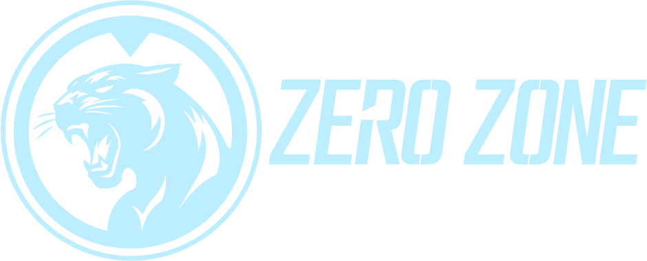

HARİTALAR
Haritayı tanı. Planını kur. Aynı hedefe ilerle.
Takım 1 Takım 2 Hedef
N↑
Harita hazırlanıyor…— Cihazında saklanır
Bu önizleme yalnızca bu bilgisayarda çalışır.Harita verisi: SquadMaps/

OYUNCU GİRİŞİHaritayı tanı. Planını kur. Aynı hedefe ilerle.